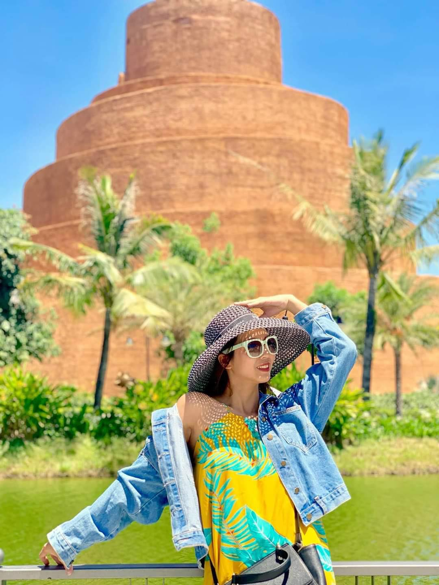
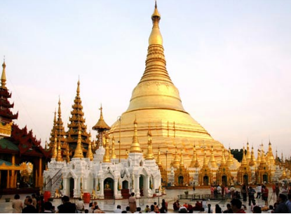
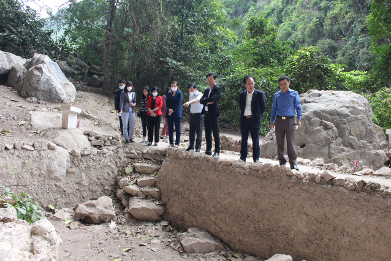
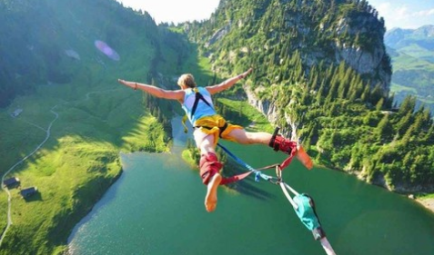
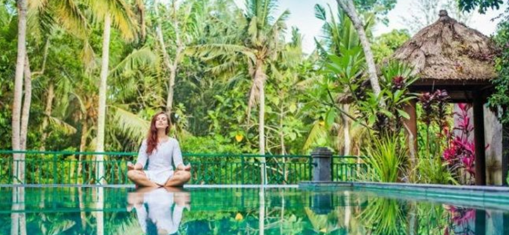
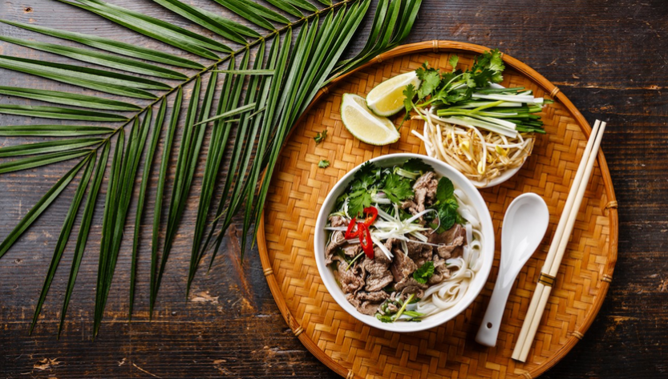

Loại hình du lịch theo hình thức tổ chức
Du lịch gia đình Đây là loại hình du lịch dành cho các thành viên trong gia đình, hội bạn thân với mục đích giúp du khách có thời gian nghỉ ngơi và quây quần bên cạnh những người thân yêu. Hơn hết là cùng nhau trải nghiệm những nét độc đáo trong văn hóa của từng vùng miền. Các địa điểm tiêu biểu tại Việt Nam phù hợp để tổ chức các chuyên du lịch cùng gia đình như Sa Pa, Nha Trang, Hội An, Đà Lạt, Phú Quốc,…
Du lịch cá nhân Du lịch cá nhân hay du lịch một mình, solo travel là một trong các loại hình du lịch được giới trẻ khá ưa chuộng. Du khách sẽ tự lên kế hoạch thám hiểm, chọn địa điểm, phương tiện di chuyển,… làm sao để phù hợp với mong muốn của bản thân.Du lịch cá nhân thường sẽ mang đến những trải nghiệm vô cùng thú vị, đảm bảo sự linh hoạt, tự do và tiết kiệm chi phí. Một số địa điểm mà giới trẻ nhất định không được bỏ qua khi đi du lịch một mình như: Đà Lạt, Đà Nẵng, Nha Trang,…
Du lịch theo đoàn Du lịch theo đoàn hiện nay đang rất thịnh hành, được nhiều công ty, doanh nghiệp lựa chọn. Trải nghiệm hình thức du lịch này, người tham gia sẽ có cơ hội giao lưu, trò chuyện và mở rộng mối quan hệ. Bên cạnh đó là tham quan, khám phá các kỳ quan thiên nhiên dưới sự hướng dẫn của những người có kinh nghiệm.Hiện nay, vườn quốc gia Ba Vì, núi Hàm Lợn, Tam Đảo, Đại Lải,… là những địa điểm phổ biến thường được lựa chọn để tổ chức các chuyến du lịch theo đoàn.
Loại hình du lịch theo mục đích chuyến đi
Tour Du Lịch Văn Hóa:tham quan di tích lịch sử, bảo tàng, văn miếu, tham dự các lễ hội, sự kiện văn hóa,... để hiểu sâu hơn về đất nước và con người tại địa phương mình đến thăm.
Tour du lịch tôn giáo: tín ngưỡng, truyền thống tâm linh, phong tục tập quán và các giá trị văn hóa đặc trưng của từng địa phương.
Tour Du Lịch Nghỉ Dưỡng: thường kết hợp các hoạt động giải trí, chăm sóc sức khỏe, lễ hội, mua sắm,...nhằm giúp du khách thư giãn, nghỉ ngơi sau khoảng thời gian mệt mỏi.
Tour du lịch công vụ:tham dự các cuộc họp, hội nghị, hội thảo, triển lãm hàng hóa và các sự kiện chuyên ngành liên quan đến công việc hoặc ngành nghề của họ.
Tour du lịch giải trí :tham quan các công viên giải trí, khu du lịch, casino, trung tâm thương mại hay xem các buổi biểu diễn nghệ thuật và thưởng thức ẩm thực địa phương
Tour du lịch mạo hiểmCác tour du lịch này thường được tổ chức ở những địa điểm vẫn giữ được nét hoang sơ và kết hợp với các hoạt động như như leo núi, vượt thác, nhảy dù, đua xe,...
Tour Du Lịch Thể Thao : leo núi, đá bóng, bóng chuyền bãi biển, lướt ván, bơi lội,...
Tour du lịch chăm sóc sức khỏechăm sóc, nâng cao sức khỏe về thể chất và tinh thần. Loại hình này đang dần trở nên phổ biến và có nhiều dịch vụ hơn để đáp ứng đa dạng các nhu cầu.

Du lịch khám phá Du lịch khám phá phù hợp với những người ưa thích di chuyển và khám phá những vùng đất mới lạ, thích thú được hoà mình vào không gian thiên nhiên và dám mạo hiểm. Các hoạt động du lịch khám phá thường gắn liền với các tỉnh thành còn giữ nguyên được nét hoang sơ và có nhiều hoạt động truyền thống đặc sắc thu hút khách du lịch trải nghiệm. Hiện nay phổ biến là các hoạt động nhảy dù tại Mù căng chải ( Yên Bái), trekking Cù Lao Thẩn, săn mây Tà Xùa, hái mận Mộc Châu (Sơn La),....
Du lịch sinh thái Các loại hình du lịch sinh thái bao gồm: leo núi, chèo thuyền, tham quan vườn quốc gia, khu di tích, tham quan biển hồ,. Du lịch sinh thái là du lịch gắn liền với tự nhiên và văn hoá bản địa, hướng tới giữ gìn văn hoá, bảo vệ môi trường và lan toả văn hoá sống của các người dân vùng miền. Nhắc đến du lịch sinh thái, không thể bỏ qua những địa điểm nổi tiếng như Khu du lịch Tràng An - Bái Đính, khu du lịch Cần Giờ, khu du lịch Vườn quốc gia Ba Bể - Bắc Kạn, Vườn quốc gia Cúc Phương,..
Du lịch ẩm thực Du lịch ẩm thực là loại hình du lịch thu hút khách nước ngoài tham gia trải nghiệm vô cùng đông đảo. Du khách sẽ được khám phá những nét độc đáo trong văn hóa ẩm thực của từng vùng miền, quốc gia.Khi tham gia hành trình trải nghiệm ẩm thực, khách du lịch không chỉ được thưởng thức những món ăn ngon miệng mà còn cơ hội để tìm hiểu về lịch sử, văn hóa và con người địa phương.Những loại hình du ẩm thực được yêu thích nhất hiện nay: Bữa tiệc cung đình Huế hay ẩm thực Bắc Trung Nam,…
